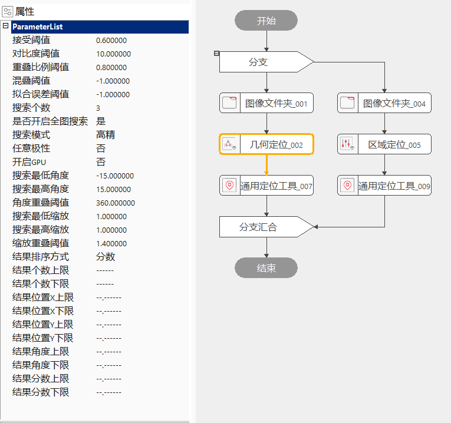
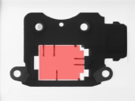
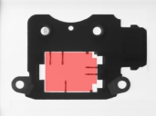

几何定位工具能够在实时图像中进行一个到多个实时模式与训练模式之间的匹配，定位结果包含了匹配分数、位置、角度等诸多信息。
图1是一种典型定位案例，图中十字标记作为训练模式特征，训练位置坐标(320,240)。其中：a为训练原图；b为训练原图经过平移(10,10)；c为训练原图旋转-10°；d为训练原图旋转10°；e为低信噪比图像；f为低对比度图像；g为低亮度图像；h为高亮度图像；i为部分缺失图像。上述多种情况下，定位工具均能给出高精度定位结果。
根据训练的几何特征，找出匹配几何的位置，给出结果个数、结果数组。
几何定位工具通过模式训练来获取目标的几何特征描述，几何特征可以精确、快速的进行旋转、缩放等变换，且对图像灰度线性、灰度非线性变化具有良好的适应性。几何定位工具在实时图像中搜索训练模式，计算实时图像中结果模式的位置、其相对于训练模式的角度和相对于训练模式的缩放。
工具执行流程：配置输入→设定属性→训练图像→执行搜索。
双击工具在弹出窗口中配置输入图像，如图2
属性栏设置如图3，右键工具→属性→打开高级界面设置如图4

一个模式由若干个几何特征组成，每一个特征对应为图像中的一条边界。为了提高搜索效率，我们对边界点以颗粒度为采样间隔进行重采样。当颗粒度较大时，用来描述模式的边界点数量较少，搜索效率得到较大的提高。与此同时，模式中尺寸较小的几何特征由于边界点数量不足而被删除，如图5所示。
高级界面中点击“启动掩膜”以及“设置掩膜图像”后，就可以在模板训练过程中，屏蔽掉不参与模式训练的区域，减少参与模式训练的几何特征了。
 
 
图6 ( a )：原始的特征图像，当现场定位只需要白边轮廓而不需要使用向内凹的突起时，可使用掩膜。
图6 ( b )：掩膜工具中被红色覆盖的区域是不参与特征训练的。掩膜好之后，点击“应用”，该掩膜区域就设置成功。
图6 ( c )：掩膜完之后，点击高级界面中的“执行模式训练”，则会生成新的训练模板。
重叠阈值为两个定位结果在图像中重叠的百分比，其取值范围为0到1，其中0表示二者无重叠，1表示二者完全重合。如果两个定位结果之间的重叠值大于重叠阈值，并且在其他开启的自由度上也是重复的，定位工具会删除其中评价分数较低者，保留具有更佳匹配的结果。如图7所示，a中重叠值为0；b中重叠值为0.5；c中重叠值为1.0。重叠阈值也会在一定程度上影响工具的耗时。重叠阈值越高，定位过程中待评价的定位结果可能就越多，定位工具的耗时可能也会更高。一般的，我们设置重叠阈值为0.8。
角度重叠阈值主要用于滤除多个位置信息均相同，但旋转角度不同的匹配结果。如图8所示，旋转对称的十字心定位结果，当角度重叠阈值为0°时，实时搜索给出了包括4个位置信息相同，但角度信息不同的定位结果；当角度重叠阈值为360°时，实时搜索仅给出一个定位结果。角度重叠阈值主要应用于：圆，正多边形，十字等旋转对称的匹配模式。
结果个数上下限参数
设定结果个数的判定区间，默认为“——”不设置判定区间，可设置的判定区间为[0, 5000]且上限大于下限或只设置一个，只设置一个则进行单边判定，大于等于判定下限或小于等于上限执行结果为成功，反之失败；当设置两个判定区间后，当结果个数大于等于判定下限小于等于上限时执行结果为成功，反之失败。
结果位置X上下限参数
设定结果位置X的判定区间，默认为“–.——”不设置判定区间，可设置的判定区间为[0,100000]且上限大于下限或只设置一个，只设置一个则进行单边判定，大于等于判定下限或小于等于上限执行结果为成功，反之失败；当设置两个判定区间后，当结果个数大于等于判定下限小于等于上限时执行结果为成功，反之失败。
结果位置Y上下限参数
设定结果位置Y的判定区间，默认为“–.——”不设置判定区间，可设置的判定区间为[0, 100000]且上限大于下限或只设置一个，只设置一个则进行单边判定，大于等于判定下限或小于等于上限执行结果为成功，反之失败；当设置两个判定区间后，当结果个数大于等于判定下限小于等于上限时执行结果为成功，反之失败。
结果角度上下限参数
设定结果角度的判定区间，默认为“–.——”不设置判定区间，可设置的判定区间为[-360, 360]且上限大于下限或只设置一个，只设置一个则进行单边判定，大于等于判定下限或小于等于上限执行结果为成功，反之失败；当设置两个判定区间后，当结果个数大于等于判定下限小于等于上限时执行结果为成功，反之失败。
结果分数上下限参数
设定结果分数的判定区间，默认为“–.——”不设置判定区间，可设置的判定区间为[0, 1]且上限大于下限或只设置一个，只设置一个则进行单边判定，大于等于判定下限或小于等于上限执行结果为成功，反之失败；当设置两个判定区间后，当结果个数大于等于判定下限小于等于上限时执行结果为成功，反之失败。
右键工具→属性→打开高级界面→训练参数，如图9；
（1）首先选择“训练图像”来源：
a.“输入图像"：训练图像从参数链“输入图像”获取；
b.“加载图像"：训练图像由离线加载方式从文件获取；
（2）点击“获取训练图像”：更新训练图像，点击后会先进行弹框提示；
（3）点击“执行模式训练”：进行训练；
根据设定的搜索参数和判定结果参数返回相应的搜索结果，如图10；
| 注意事项 |
|---|
| 1. 如果有多个定位结果，可以通过数组解析工具，数据类型选择“scGeomSearchResult”，来获取几何定位结果的搜索结果数组中的某个搜索结果，再使用几何定位结果解析工具进行解析，这样可以得到如二维线性变换、匹配区域和匹配标记点之类的输出。例如在拾取应用中，视野中可能定位出多个目标，使用数组解析工具和几何定位结果解析工具，配合循环就可以遍历显示定位结果。 |
| 2. 几何定位的多个二维变换结果还可以使用，数据类型为“sc2XformLinear”的数组解析工具获得。 |
| 3. 开启多区域搜索时，搜索结果的顺序与设置的搜索区域的顺序是对应的，因此此情况结果排序方式参数不可用。 |
| 4. 开启多区域搜索时，是否从外部输入搜索区域 参数不可用。 |
| 参数名称 | 参数说明 |
|---|---|
| 训练区域 | 模板图像中参与训练的仿射矩形区域。 |
| 手动输入标记点 | 手动输入标记点的X轴、Y轴坐标。 |
| 保存训练图像 | 保存工程时，是否保存训练图像。 |
| 自动颗粒度 | 是否由算法自动确定颗粒度。选择否则在属性窗口显示颗粒度参数。 |
| 颗粒度 | 描述模式中的边界点的数目。颗粒度越大，速度越快，精度越低；颗粒度越小，速度越慢，精度越高。取值范围[1,16]，支持小数，只有在自动颗粒度为否的时候，显示此属性。 |
| 自动噪声阈值 | 是否由算法自动确定噪声阈值。选择否，则在属性窗口显示噪声阈值参数。 |
| 噪声阈值 | 在图像中，像素值低于噪声阈值的部分被认为是噪声，不参与模板训练；像素值高于噪声阈值的部分被认为是图像特征，参与模板训练。一般按默认值即可。取值范围[0,255]，支持小数。只有在自动噪声阈值为否的时候，显示此属性 |
| 自动边缘强度 | 是否由算法自动确定边缘强度。选择否则在属性窗口显示边缘强度参数。 |
| 边缘强度阈值 | 模式中所有边界点的幅值的总和。一般按默认值即可。取值范围[1, +∞），取值为整数。只有在自动边缘强度为否的时候，显示此属性。 |
| 接受阈值 | 训练模板与实时搜索结果之间有一个匹配程度的分数，当匹配分数高于接收阈值时表明实时搜索成功。接收阈值的取值范围是(0,1)。 |
| 对比度阈值 | 对比度定义为模式中所有边界点的幅值的平均。用户可以通过设置对比度阈值删除对比度较低的模式。取值范围[1,255]，支持小数。 |
| 重叠比例阈值 | 如果存在多个模式，模式的重复度必须小于重叠比例阈值，否则将删除重复模式。取值范围(0,1]，支持小数 |
| 混叠阈值 | 反映的是训练模式中没有的特征在实时定位结果中被找到的多少，混乱点越多，混乱值越高。实时定位结果中含有而训练模板中没有的额外特征。取值范围为-1或[0,+∞)，支持小数，默认为-1不使用阈值。 |
| 拟合误差阈值 | 反映的是训练模式与实时定位结果之间的差异程度。取值范围-1或[0,+∞)，0代表训练模式与实时定位结果之间完全相同。 |
| 搜索个数 | 设置最多的搜索结果个数。 |
| 是否开启全图搜索 | 开启全图搜索的开关。当选择“是”时，整幅实时采集的图像都是该工具的搜索范围；当选择“否”时，Edit视图中的“搜索区域”仿射矩形是该工具的搜索范围。搜索区域要大于训练区域。 |
| 搜索模式 | 包含快速、高精、高精稳健三种形式，耗时依次增加，精度依次提升。 |
| 任意极性 | 极性指模式的几何特征的灰度级过渡形式，即从亮到暗或从暗到亮。 |
| 开启GPU | 在几何定位工具执行时，是否开启GPU。开启GPU,搜索加速，耗时缩短。 |
| 搜索最低/最高角度 | 搜索的角度范围，最低角度>=-360°，最高角度<=360°，最低角度<=最高角度。 |
| 角度重叠阈值 | 根据定位目标的旋转范围来确定起始角度、终止角度。角度范围越大，速度越慢；角度范围越小，速度越快。取值范围(0,360]，支持小数，一般按默认值360度即可 。 |
| 搜索最低/最高缩放 | 搜索时的缩放范围。 |
| 缩放重叠阈值 | 根据定位目标的缩放范围来确定起始缩放、终止缩放。缩放范围越大，速度越慢；缩放范围越小，速度越快。取值范围(0, +∞) |
| 结果排序方式 | 按照指定的方式对定位结果进行排序。支持的结果排序方式有分数、混叠值等12种。 |
| 结果个数上限 | 设定结果个数上限，默认为“——”不判定，可设置的判定区间为[0, 5000]且大于下限，当结果个数大于上限时执行结果为失败。 |
| 结果个数下限 | 设定结果个数下限，默认为“——”不判定，可设置的判定区间为[0, 5000]且小于上限，当结果个数小于下限时执行结果为失败。 |
| 结果位置X上限 | 设定结果位置X上限，默认为“–.——”不判定，可设置的判定区间为[0, 100000]且大于下限，当结果位置X大于上限时执行结果为失败。 |
| 结果位置X下限 | 设定结果位置X下限，默认为“–.——”不判定，可设置的判定区间为[0, 100000]且小于上限，当结果位置X小于下限时执行结果为失败。 |
| 结果位置Y上限 | 设定结果位置Y上限，默认为“–.——”不判定，可设置的判定区间为[0, 100000]且大于下限，当结果位置Y大于上限时执行结果为失败。 |
| 结果位置Y下限 | 设定结果位置Y下限，默认为“–.——”不判定，可设置的判定区间为[0, 100000]且小于上限，当结果位置Y小于下限时执行结果为失败。 |
| 结果角度上限 | 设定结果角度上限，默认为“–.——”不判定，可设置的判定区间为[-360, 360]且大于下限，当结果角度大于上限时执行结果为失败。 |
| 结果角度下限 | 设定结果角度下限，默认为“–.——”不判定，可设置的判定区间为[-360, 360]且小于上限，当结果角度小于下限时执行结果为失败。 |
| 结果分数上限 | 设定结果分数上限，默认为“–.——”不判定，可设置的判定区间为[0, 1]且大于下限，当结果分数大于上限时执行结果为失败。 |
| 结果分数下限 | 设定结果分数下限，默认为“–.——”不判定，可设置的判定区间为[0, 1]且小于上限，当结果分数小于下限时执行结果为失败。 |
| 参数名称 | 参数说明 |
|---|---|
| 输入图像 | 输入图像宽度、高度、像素大小。 |
| 训练标记点坐标 | 标记点用于辅助定位。 |
| 结果个数 | 搜索结果个数。 |
| 结果数组 | 搜索结果组成的数组。 |
| 二维线性变换数组 | 二维线性变换是指目标相对于模板的平移、旋转、缩放变换。二维线性变换数组是指在该工具在某一次执行完之后，所有二维线性变换所组成的数组。 |
| 搜索坐标数组 | 搜索坐标是指标记点实时搜索结果，搜索坐标数组是指该工具在某一次执行完后，所有搜索标记点所组成的数组。 |
| 二维线性变换 | 该工具输出的二维线性变换是指该工具二维线性变换数组中的第一组值。 |
| 搜索坐标 | 该工具输出的搜索坐标是指搜索坐标数组的第一组值。它与输出的二维线性变换针对同一个搜索结果。 |
| 执行结果 | 工具执行结果。 |
| 执行时间 | 工具执行时间。 |
参见“\Samples\通用定位工具.gvp”。